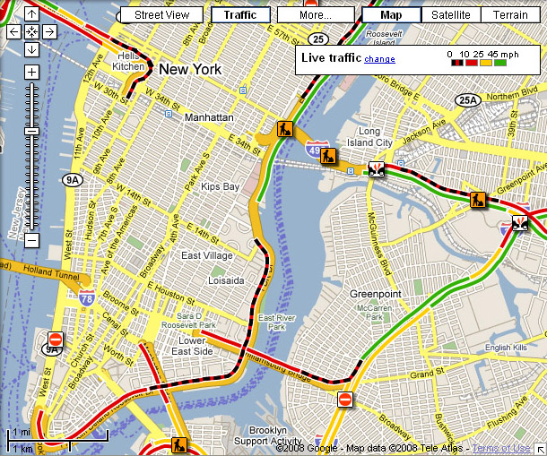

Login InfoTraveler InformationFind an interviewerInterviewer approvalPayment
Here are interviewers in your area,
Interviewer Location:

I want to contact this interviewer If you are not calling them immediately, you may revisit this page by clicking on
the become a traveller link at any time, and your progress up to this point will be saved.
After you contact an interviewer and they approve you, you are
eligible for Servas membership and will be transfered to the next step.
If you are unable to locate an interviewer in your area we can connect you with a telephone interviewer through our office.
The Next button will be enabled after the interviewer approves them.